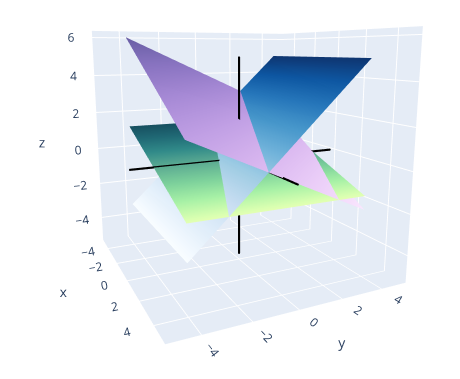

Chapter 1 - Linear Equations in Linear Algebra
1.1 - Systems of Linear Equations
| Main: | Index |
| Previous: | Index |
| Next: | 1.2 - Row Reduction and Echelon Forms |
Results
Linear Equation
A linear equation is an equation on the form: $$ a_1x_1 + a_2x_2 + \ldots + a_nx_n = b \tag{1.1.1} $$ where the coefficients $a_i\in\R$ and $b\in\R$ (or they are complex).Linear Equation
A solution $(s_1, \ldots, s_n)$ is a list of numbers that make the equation a true statement when replacing the variables $(x_1,\ldots, x_n)$. The set of all solutions is called the solution setFinding a solution set of a system of two linear equations: $$ \begin{array}{rcccr} x_1 & - & 2x_2 & = & -1 \\ -x_1 & + & 3x_2 & = & 3 \end{array} $$ A solution is any pair of numbers that satisfy both equations. Graphically this means finding where the two lines intersect. As shown below, this happens when $x=3$ and $y=2$.

Verifying that (3, 2) is a solution by checking that the equations are satisfied: $$ (3) - 2(2) = 3 - 4 = -1 $$ $$ -(3) + 3(2) = -3 + 6 = 3 $$
There are two other possibilities. A system of equations can have no solutions, or an infinite number of solutions. Consider the following two systems of equations and the graphical representation: $$ \begin{array}{rcccr} x_1 & - & 2x_2 & = & -1 \\ -x_1 & + & 2x_2 & = & 3 \end{array} $$

$$ \begin{array}{rcccr} x_1 & - & 2x_2 & = & -1 \\ -x_1 & + & 2x_2 & = & 1 \end{array} $$

This can be summarised as follows:
Theorem
A system of linear equations has either:
- no solutions
- exactly one solution
- infinite solutions
Matrix Notation
Systems of linear equations can be represented as a matrix. For instance, the system: $$ \begin{array}{rcccccr} x_1 & - & 2x_2 & + & x_3 & = & 0 \\ & & 2x_2 & - & 8x_3 & = & 8 \\ -4x_1 & + & 5x_2 & + & 9x_3 & = & -9 \end{array} $$ Can be represented as the following matrix - called the coefficient matrix: $$ \begin{bmatrix*}[rrr] 1 & -2 & 1 \\ 0 & 2 & -8 \\ -4 & 5 & 9 \end{bmatrix*} $$ Or, when including the right hand side, as the augmented matrix: $$ \begin{bmatrix*}[rrrr] 1 & -2 & 1 & 0\\ 0 & 2 & -8 & 8\\ -4 & 5 & 9 & -9 \end{bmatrix*} $$ Matrices are said to have dimensions $m\times p$, with $m$ rows and $n$ columns.Solving a Linear System
The process of isolating one variable and replacing the solution in another equation can be generalized by elementary row operations on the matrix.Elementary Row Operations
- (Replacement) Replace one row by the sum of itself and a multiple of another row.
- (Interchange) Interchange two rows
- (Scaling) Multiply all entries in a row by a nonzero constant.
As an example. We start with the following system of equations: $$ \begin{array}{rcccccr} x_1 & - & 2x_2 & + & x_3 & = & 0 \\ & & 2x_2 & - & 8x_3 & = & 8 \\ -4x_1 & + & 5x_2 & + & 9x_3 & = & -9 \end{array} $$ Which has the following augmented matrix representation: $$ \begin{bmatrix*}[rrrr] 1 & -2 & 1 & 0\\ 0 & 2 & -8 & 8\\ -4 & 5 & 9 & -9 \end{bmatrix*} $$ By a series of elementary row operations, we end up with: $$ \begin{bmatrix*}[rrrr] 1 & 0 & 0 & 29\\ 0 & 1 & 0 & 16\\ 0 & 0 & 1 & 3 \end{bmatrix*} $$ Which we can translate back into the following solution: $$ \begin{array}{rcccccr} x_1 & & & & & = & 29 \\ & & x_2 & & & = & 16 \\ & & & & x_3 & = & 3 \end{array} $$
Two matrices are row equivalent if we can use row operations to transform one into the other. If two matrices are equivalent, they have the same solution sets.
Existence and Uniqueness
Since there are three possible outcomes regarding solutions. We ask the following two questions:- Is the system consistent? That is, does at least one solution exist?
- If a solutione xists, is it unique?
Example Going back to this system: $$ \begin{array}{rcccccr} x_1 & - & 2x_2 & + & x_3 & = & 0 \\ & & 2x_2 & - & 8x_3 & = & 8 \\ -4x_1 & + & 5x_2 & + & 9x_3 & = & -9 \end{array} $$ This was found to be row equivalent to this system: $$ \begin{array}{rcccccr} x_1 & & & & & = & 29 \\ & & x_2 & & & = & 16 \\ & & & & x_3 & = & 3 \end{array} $$ Hence, this system has a unique solution. (If there are infinitely many solutions, we get a free variable).
Example Say we start with the following system: $$ \begin{array}{rcccccr} & & x_2 & - & 4x_3 & = & 8 \\ 2x_1 & - & 3x_2 & + & 2x_3 & = & 1 \\ 5x_1 & - & 8x_2 & + & 7x_3 & = & 1 \end{array} $$ Written as an augmented matrix: $$ \begin{bmatrix*}[rrrr] 0 & 1 & -4 & 8 \\ 2 & -3 & 2 & 1 \\ 5 & -8 & 7 & 1 \end{bmatrix*} $$ Which is row requivalent to: $$ \begin{bmatrix*}[rrrr] 2 & -3 & 2 & 1 \\ 0 & 1 & -4 & 8 \\ 0 & 0 & 0 & 5/2 \end{bmatrix*} $$ The last row in the matrix translates to: $0 = 5/2$ which is a contradiction. Hence, this system is inconsistent, so there are no solutions.
Exercise 1
Solve the system with row operations. $$ \begin{array}{rcccr} x_1 & + & 5x_2 & = & 7 \\ -2x_1 & - & 7x_2 & = & -5 \end{array} $$Answer
Augmented matrix: $$ \begin{bmatrix*}[rrr] 1 & 5 & 7 \\ -2 & -7 & -5 \end{bmatrix*} $$ II = II + 2I $$ \begin{bmatrix*}[rrr] 1 & 5 & 7 \\ 0 & 3 & 9 \end{bmatrix*} $$ II = (1/3)II $$ \begin{bmatrix*}[rrr] 1 & 5 & 7 \\ 0 & 1 & 3 \end{bmatrix*} $$ I = I - 5II $$ \begin{bmatrix*}[rrr] 1 & 0 & -8 \\ 0 & 1 & 3 \end{bmatrix*} $$ Solution is $x_1 = -8$ and $x_2 = 3$. Checking: $$ (-8) + 5(3) = -8 + 15 = 7 $$ $$ -2(-8) - 7(3) = 16 - 21 = -5 $$
■
Exercise 2
Solve the system with row operations. $$ \begin{array}{rcccr} 2x_1 & + & 4x_2 & = & -4 \\ 5x_1 & + & 7x_2 & = & 11 \end{array} $$Answer
Augmented matrix: $$ \begin{bmatrix*}[rrr] 2 & 4 & -4 \\ 5 & 7 & 11 \end{bmatrix*} $$ I = (1/2)I $$ \begin{bmatrix*}[rrr] 1 & 2 & -2 \\ 5 & 7 & 11 \end{bmatrix*} $$ II = II - 5I $$ \begin{bmatrix*}[rrr] 1 & 2 & -2 \\ 0 & -3 & 21 \end{bmatrix*} $$ II = (-1/3)II $$ \begin{bmatrix*}[rrr] 1 & 2 & -2 \\ 0 & 1 & -7 \end{bmatrix*} $$ I = I - 2II $$ \begin{bmatrix*}[rrr] 1 & 0 & 12 \\ 0 & 1 & -7 \end{bmatrix*} $$ Solution is $x_1 = 12$ and $x_2 = -7$. Checking: $$ 2(12) + 4(-7) = 24 - 28 = -4 $$ $$ 5(12) + 7(-7) = 60 - 49 = 11 $$
■
Exercise 3
Find the point where two lines intersect. (Not showing the image). As a system of linear equations: $$ \begin{array}{rcccr} x_1 & - & 2x_2 & = & -2 \\ x_1 & + & 5x_2 & = & 7 \end{array} $$Answer
Augmented matrix: $$ \begin{bmatrix*}[rrr] 1 & -2 & -2 \\ 1 & 5 & 7 \end{bmatrix*} $$ II = II - I $$ \begin{bmatrix*}[rrr] 1 & -2 & -2 \\ 0 & 7 & 9 \end{bmatrix*} $$ II = (1/7)II $$ \begin{bmatrix*}[rrr] 1 & -2 & -2 \\ 0 & 1 & 9/7 \end{bmatrix*} $$ I = I + 2II $$ \begin{bmatrix*}[rrr] 1 & 0 & 4/7 \\ 0 & 1 & 9/7 \end{bmatrix*} $$ Solution is $x_1 = 4/7$ and $x_2 = 9/7$. Verifying: $$ (4/7) - 2(9/7) = 4/7 - 18/7 = -14/7 = -2 $$ $$ (4/7) + 5(9/7) = 4/7 + 45/7 = 49/7 = 7 $$
■
Exercise 4
Finding the intersection of two lines given by: $$ \begin{array}{rcccr} x_1 & - & 5x_2 & = & 1 \\ 3x_1 & - & 7x_2 & = & 5 \end{array} $$Answer
Augmented matrix: $$ \begin{bmatrix*}[rrr] 1 & -5 & 1 \\ 3 & -7 & 5 \end{bmatrix*} $$ II = II - 3I $$ \begin{bmatrix*}[rrr] 1 & -5 & 1 \\ 0 & 8 & 2 \end{bmatrix*} $$ II = (1/8)II $$ \begin{bmatrix*}[rrr] 1 & -5 & 1 \\ 0 & 1 & 1/4 \end{bmatrix*} $$ I = I + 5II $$ \begin{bmatrix*}[rrr] 1 & 0 & 9/4 \\ 0 & 1 & 1/4 \end{bmatrix*} $$ The solution is $x_1 = 9/4$ and $x_2 = 1/4$. Verifying: $$ (9/4) - 5(1/4) = 9/4 - 5/4 = 4/4 = 1 $$ $$ 3(9/4) - 7(1/4) = 27/4 - 7/4 = 20/4 = 5 $$
■
Exercise 5
Finding the next steps to solve the system: $$ \begin{bmatrix*}[rrrrr] 1 & -4 & 5 & 0 & 7 \\ 0 & 1 & -3 & 0 & 6 \\ 0 & 0 & 1 & 0 & 2 \\ 0 & 0 & 0 & 1 & -5 \end{bmatrix*} $$Answer
We already have the matrix on a pivot form. The next steps would be to remove the -3 and 5 in column 3, and -4 in column 2 to get a row reduced form.
■
Exercise 6
Finding the next steps to solve the system: $$ \begin{bmatrix*}[rrrrr] 1 & -6 & 4 & 0 & -1 \\ 0 & 2 & -7 & 0 & 4 \\ 0 & 0 & 1 & 2 & -3 \\ 0 & 0 & 3 & 1 & 6 \end{bmatrix*} $$Answer
Not quite on echelon form. Just need to do IV = IV - 3III and then remove all elements above a pivot element.
■
Exercise 7
Describe the solution set of the following augmented matrix. $$ \begin{bmatrix*}[rrrr] 1 & 7 & 3 & -4 \\ 0 & 1 & -1 & 3 \\ 0 & 0 & 0 & 1 \\ 0 & 0 & 1 & -2 \end{bmatrix*} $$Answer
In row 3 we see we get a contradiction: $0 = 1$. This system is inconsistent and does not have any solutions.
■
Exercise 8
Describe the solution set of the following augmented matrix. $$ \begin{bmatrix*}[rrrr] 1 & -4 & 9 & 0 \\ 0 & 1 & 7 & 0 \\ 0 & 0 & 2 & 0 \end{bmatrix*} $$Answer
Here we can see that the b vector is all 0s. We can easily reduce this to the following system: $$ \begin{bmatrix*}[rrrr] 1 & 0 & 0 & 0 \\ 0 & 1 & 0 & 0 \\ 0 & 0 & 1 & 0 \end{bmatrix*} $$ so there is a unique soluion which is the origin: (0, 0, 0).
■
Exercise 9
Describe the solution set of the following augmented matrix. $$ \begin{bmatrix*}[rrrrr] 1 & -1 & 0 & 0 & -4 \\ 0 & 1 & -3 & 0 & -7 \\ 0 & 0 & 1 & -3 & -1 \\ 0 & 0 & 0 & 2 & 4 \end{bmatrix*} $$Answer
Row operations. IV = (1/2)IV $$ \begin{bmatrix*}[rrrrr] 1 & -1 & 0 & 0 & -4 \\ 0 & 1 & -3 & 0 & -7 \\ 0 & 0 & 1 & -3 & -1 \\ 0 & 0 & 0 & 1 & 2 \end{bmatrix*} $$ III = III + 3IV $$ \begin{bmatrix*}[rrrrr] 1 & -1 & 0 & 0 & -4 \\ 0 & 1 & -3 & 0 & -7 \\ 0 & 0 & 1 & 0 & 5 \\ 0 & 0 & 0 & 1 & 2 \end{bmatrix*} $$ II = II + 3III $$ \begin{bmatrix*}[rrrrr] 1 & -1 & 0 & 0 & -4 \\ 0 & 1 & 0 & 0 & 8 \\ 0 & 0 & 1 & 0 & 5 \\ 0 & 0 & 0 & 1 & 2 \end{bmatrix*} $$ I = I + II $$ \begin{bmatrix*}[rrrrr] 1 & 0 & 0 & 0 & 4 \\ 0 & 1 & 0 & 0 & 8 \\ 0 & 0 & 1 & 0 & 5 \\ 0 & 0 & 0 & 1 & 2 \end{bmatrix*} $$ There is a unique solution: $(4, 8, 5, 2)$.
■
Exercise 11
Solve the system. $$ \begin{array}{rcccccr} && x_2 & + & 4x_3 & = & -5 \\ x_1 & + & 3x_2 & + & 5x_3 & = & -2 \\ 3x_1 & + & 7x_2 & + & 7x_3 & = & 6 \end{array} $$Answer
Augmented matrix: $$ \begin{bmatrix*}[rrrr] 0 & 1 & 4 & -5 \\ 1 & 3 & 5 & -2 \\ 3 & 7 & 7 & 6 \end{bmatrix*} $$ I ↔ II $$ \begin{bmatrix*}[rrrr] 1 & 3 & 5 & -2 \\ 0 & 1 & 4 & -5 \\ 3 & 7 & 7 & 6 \end{bmatrix*} $$ III = III - 3I $$ \begin{bmatrix*}[rrrr] 1 & 3 & 5 & -2 \\ 0 & 1 & 4 & -5 \\ 0 & -2 & -8 & 12 \end{bmatrix*} $$ III = III + 2II $$ \begin{bmatrix*}[rrrr] 1 & 3 & 5 & -2 \\ 0 & 1 & 4 & -5 \\ 0 & 0 & 0 & 2 \end{bmatrix*} $$ Here we arrive at a contradiction. This system is inconsistent.
■
Exercise 13
Solve the system. $$ \begin{array}{rcccccr} x_1 & & & - & 3x_3 & = & 8 \\ 2x_1 & + & 2x_2 & + & 9x_3 & = & 7 \\ & & x_2 & + & 5x_3 & = & -2 \end{array} $$Answer
Augmented matrix. $$ \begin{bmatrix*}[rrrr] 1 & 0 & -3 & 8 \\ 2 & 2 & 9 & 7 \\ 0 & 1 & 5 & -2 \end{bmatrix*} $$ II ↔ III $$ \begin{bmatrix*}[rrrr] 1 & 0 & -3 & 8 \\ 0 & 1 & 5 & -2 \\ 2 & 2 & 9 & 7 \end{bmatrix*} $$ III = III - 2I $$ \begin{bmatrix*}[rrrr] 1 & 0 & -3 & 8 \\ 0 & 1 & 5 & -2 \\ 0 & 2 & 15 & -9 \end{bmatrix*} $$ III = III - 2II $$ \begin{bmatrix*}[rrrr] 1 & 0 & -3 & 8 \\ 0 & 1 & 5 & -2 \\ 0 & 0 & 5 & -5 \end{bmatrix*} $$ (1/5)III $$ \begin{bmatrix*}[rrrr] 1 & 0 & -3 & 8 \\ 0 & 1 & 5 & -2 \\ 0 & 0 & 1 & -1 \end{bmatrix*} $$ II = II - 5III $$ \begin{bmatrix*}[rrrr] 1 & 0 & -3 & 8 \\ 0 & 1 & 0 & 3 \\ 0 & 0 & 1 & -1 \end{bmatrix*} $$ I = I + 3III $$ \begin{bmatrix*}[rrrr] 1 & 0 & 0 & 5 \\ 0 & 1 & 0 & 3 \\ 0 & 0 & 1 & -1 \end{bmatrix*} $$ Solution is $x_1 = 5$, $x_2 = 3$ and $x_3 = -1$ or $(5, 3, -1)$. Verifying: $$ (5) - 3(-1) = 5 + 3 = 8 $$ $$ 2(5) + 2(3) + 9(-1) = 10 + 6 - 9 = 7 $$ $$ (3) + 5(-1) = 3 - 5 = -2 $$
■
Exercise 16
Determine if the system is consistent without completely solving it. $$ \begin{array}{rcccccccr} x_1 & & & & & - & 2x_4 & = & -3 \\ & & 2x_2 & + & 2x_3 & & & = & 0 \\ & & & & x_3 & + & 3x_4 & = & 1 \\ -2x_1 & + & 3x_2 & + & 2x_3 & + & x_4 & = & 5 \end{array} $$Answer
We need to find the pivot columns. Augmented matrix. $$ \begin{bmatrix*}[rrrrr] 1 & 0 & 0 & -2 & -3 \\ 0 & 2 & 2 & 0 & 0 \\ 0 & 0 & 1 & 3 & 1 \\ -2 & 3 & 2 & 1 & 5 \end{bmatrix*} $$ IV = IV + 2I
II = (1/2)II $$ \begin{bmatrix*}[rrrrr] 1 & 0 & 0 & -2 & -3 \\ 0 & 1 & 1 & 0 & 0 \\ 0 & 0 & 1 & 3 & 1 \\ 0 & 3 & 2 & -3 & -1 \end{bmatrix*} $$ IV = IV - 3II $$ \begin{bmatrix*}[rrrrr] 1 & 0 & 0 & -2 & -3 \\ 0 & 1 & 1 & 0 & 0 \\ 0 & 0 & 1 & 3 & 1 \\ 0 & 0 & -1 & -3 & -1 \end{bmatrix*} $$ IV = IV + III $$ \begin{bmatrix*}[rrrrr] 1 & 0 & 0 & -2 & -3 \\ 0 & 1 & 1 & 0 & 0 \\ 0 & 0 & 1 & 3 & 1 \\ 0 & 0 & 0 & 0 & 0 \end{bmatrix*} $$ Here we can see that we have a free variable. This system has an infinite number of solutions, but it is also consistent.
■
Exercise 17
Do the following three lines have a common point of intersection? Explain. $$ \begin{array}{rcccr} x_1 & - & 4x_2 & = & 1 \\ 2x_1 & - & x_2 & = & -3 \\ -x_1 & - & 3x_2 & = & 4 \end{array} $$Answer
If we can find a unique solution for $x_1$ and $x_2$ there is a point of intersection for all three lines, which requires us to get a row of 0s after the row operations. Augmented matrix. $$ \begin{bmatrix*}[rrr] 1 & -4 & 1 \\ 2 & -1 & -3 \\ -1 & -3 & 4 \end{bmatrix*} $$ III = III + I $$ \begin{bmatrix*}[rrr] 1 & -4 & 1 \\ 2 & -1 & -3 \\ 0 & -7 & 5 \end{bmatrix*} $$ II = II - 2I $$ \begin{bmatrix*}[rrr] 1 & -4 & 1 \\ 0 & 7 & -5 \\ 0 & -7 & 5 \end{bmatrix*} $$ Here we see that they have a common point. III = III + II $$ \begin{bmatrix*}[rrr] 1 & -4 & 1 \\ 0 & 7 & -5 \\ 0 & 0 & 0 \end{bmatrix*} $$ (1/7)II $$ \begin{bmatrix*}[rrr] 1 & -4 & 1 \\ 0 & 1 & -5/7 \\ 0 & 0 & 0 \end{bmatrix*} $$ I = I + 4II $$ \begin{bmatrix*}[rrr] 1 & 0 & -13/7 \\ 0 & 1 & -5/7 \\ 0 & 0 & 0 \end{bmatrix*} $$ The solution/intersection point is $x_1 = -13/7$ and $x_2 = -5/7$. Verifying. $$ (-13/7) - 4(-5/7) = -13/7 + 20/7 = 7/7 = 1 $$ $$ 2(-13/7) - (-5/7) = -26/7 + 5/7 = -21/7 = -3 $$ $$ -(-13/7) - 3(-5/7) = 13/7 + 15/7 = 28/7 = 4 $$
■
Exercise 18
Do the following planes have at least one common point of intersection? $$ \begin{array}{rcccccr} x_1 & + & 2x_2 & + & x_3 & = & 4 \\ & & x_2 & - & x_3 & = & 1 \\ x_1 & + & 3x_2 & & & = & 0 \end{array} $$Answer
Same procedure as previous exercise. Augmented matrix. $$ \begin{bmatrix*}[rrrr] 1 & 2 & 1 & 4 \\ 0 & 1 & -1 & 1 \\ 1 & 3 & 0 & 0 \end{bmatrix*} $$ III = III - I $$ \begin{bmatrix*}[rrrr] 1 & 2 & 1 & 4 \\ 0 & 1 & -1 & 1 \\ 0 & 1 & -1 & -4 \end{bmatrix*} $$ III = III - II $$ \begin{bmatrix*}[rrrr] 1 & 2 & 1 & 4 \\ 0 & 1 & -1 & 1 \\ 0 & 0 & 0 & -5 \end{bmatrix*} $$ Inconsistent. There are no solutions and no points of intersection.
As a further investigation, we can plot the planes. Rewriting as functions of $(x_1, x_3)$: $$ \begin{align*} x_2 &= -(1/2)x_1 - (1/2)x_3 + 2\\ x_2 &= x_3 + 1\\ x_2 &= -(1/3)x_2 \end{align*} $$ As we can see, there is no point where all planes intersect.

■
Exercise 19-22
Skipped. Just row reduction and making sure the systems are not inconsistent.Exercise 23
Veriying statements.(a) Every elementary row operation is reversible.
Answer: Yes, this is true.
(b) A 5x6 matrix has 6 rows.
Answer: No, the matrix has 5 rows and 6 columns.
(c) The solution set of a linear system involving variables $x_1,\ldots,x_n$ is a list of numbers $(s_1,\ldots,s_n)$ that makes each equation in the system a true statement.
Answer: Yes, this is true.
(d) Two fundamental questions about a linear system involve existence and uniqueness.
Answer: Yes, if a system is inconsistent it has no solutions. If there are solutions, it can have either a unique solution or an infinite amount of solutions.
■
Exercise 24
Veriying statements.(a) Elementary row operations on an augmented matrix never change the solution set of the associated linear system.
Answer: True. All matrices which are linked through row operations are row equivalent and have the same solution set.
(b) Two matrices are row equivalent if they have the same number of rows.
Answer: No, this is false. Only if they can be transformed into each other with row operations.
(c) An inconsistent system has more than one solution.
Answer: No, an inconsistent system has no solutions.
(d) Two linear systems are equivalent if they have the same solution set.
Answer: Yes, this must be true. If the solution set is $(a, b, c)$, then both linear systems must be row equivalent to the matrix: $$ \begin{bmatrix*}[rrrr] 1 & 0 & 0 & a \\ 0 & 1 & 0 & b \\ 0 & 0 & 1 & c \end{bmatrix*} $$ and by extension, they must be row equivalent to each other.
■
Exercise 25
Find an equation involving $g$, $h$ and $k$ that makes this augmented matrix correspond to a consistent system. $$ \begin{bmatrix*}[rrrr] 1 & -4 & 7 & g \\ 0 & 3 & -5 & h \\ -2 & 5 & -9 & k \end{bmatrix*} $$Answer
We will find the row reduced form and make sure that we don't have any inconsistent rows. III = III + 2I. $$ \begin{bmatrix*}[rrrr] 1 & -4 & 7 & g \\ 0 & 3 & -5 & h \\ 0 & -3 & 5 & k + 2g \end{bmatrix*} $$ III = III + II $$ \begin{bmatrix*}[rrrr] 1 & -4 & 7 & g \\ 0 & 3 & -5 & h \\ 0 & 0 & 0 & k + 2g + h \end{bmatrix*} $$ Here we see that we require $k + 2g + h = 0$ in order to avoid an inconsistent system.
■
Exercise 26
Skipping. Just start with the reduced matrix and work backwards with some random row operations. >Exercise 27
Suppose the system below is consistent for all possible values of $f$ and $g$. What can we say about the coefficients $c, d$? $$ \begin{array}{rcccr} x_1 & + & 3x_2 & = & f \\ cx_1 & + & dx_2 & = & g \end{array} $$Answer
Finding the row reduced form of the augmented matrix. We assume that $c\neq 0$. $$ \begin{bmatrix*}[rrr] 1 & 3 & f \\ c & d & g \end{bmatrix*} $$ (1/c)II $$ \begin{bmatrix*}[rrr] 1 & 3 & f \\ 1 & d/c & g/c \end{bmatrix*} $$ II = II - I $$ \begin{bmatrix*}[rrr] 1 & 3 & f \\ 0 & d/c - 3 & g/c - f \end{bmatrix*} $$ (1/(d/c - 3))II $$ \begin{bmatrix*}[rrr] 1 & 3 & f \\ 0 & 1 & \frac{g/c - f}{d/c - 3} \end{bmatrix*} $$ I = I - 3II $$ \begin{bmatrix*}[rrr] 1 & 0 & f - 3\left(\frac{g/c - f}{d/c - 3}\right) \\ 0 & 1 & \frac{g/c - f}{d/c - 3} \end{bmatrix*} $$ In order for this to be valid, we need the following two conditions to be true: $$ c\neq 0, \qquad d/c - 3\neq 0 \;\Rightarrow\; d\neq 3c $$ Which basically means that row 2 cannot be equal to row 1. If $c = 1$ then $d\neq 3$ etc. If c is 0, then d can be anything except 0 and the system is consistent.
■